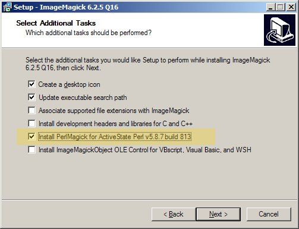
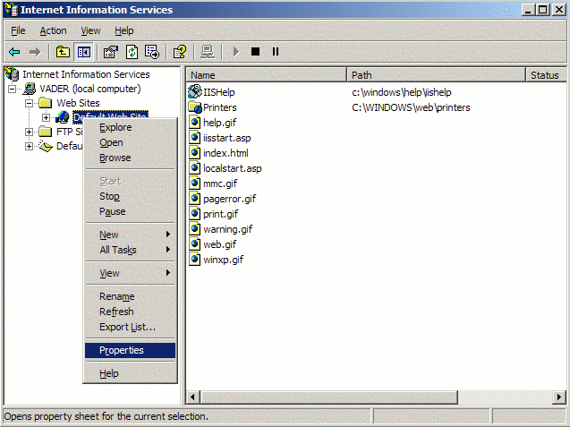
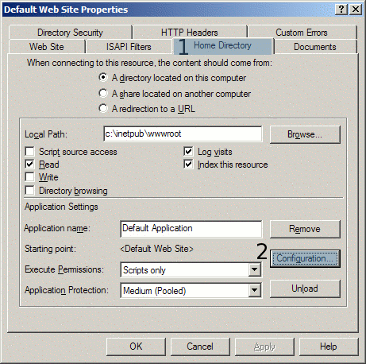
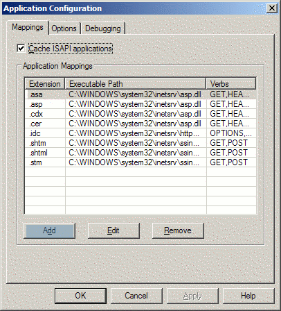

When you purchased Pixenate™ you received an email with
details of how to download the Pixenate™
software. Pixenate™ is distributed as a compressed archive file
with the suffix .tar.gz. On Windows™ the file can
be unzipped using either Winzip®,
7-Zip or any of the many ZIP
utilities for Windows™.
On unix™ based operating systems, the file can be decompressed
using the following command...
tar -xvzpf pixenate-*.tar.gzDecompressing this file will create a new directory called
pixenate which contains all of the code and resources
required by Pixenate™. We recommend installing Pixenate™
directly under your WEBROOT directory. For example, if
your webserver is Microsoft's Internet Information Server your
WEBROOT will most likely be
C:\inetpub\wwwroot (the default value), in which case you
should unzip the Pixenate archive from within this directory. After the
Unzip operation is done, there will be a new directory
C:\inetpub\wwwroot\pixenate. Once this is done (assuming
that your WebServer is running), you should be able to access this
document from your own webserver by visiting the following URL...
http://YOUR_WEBSERVER_ADDRESS:YOUR_WEBSERVER_PORT/pixenate/docs/Installation-Guide.html(replacing YOUR_WEBSERVER_ADDRESS and YOUR_WEBSERVER_PORT with appropriate values).
A note on file permissions: When the Pixenate
archive file is created, all of the file permissions are maintained
within the archive. It is strongly recommended that you decompress the
archive from within the directory where you wish the
pixenate directory to reside. On some operating systems,
the file permissions are not maintained when the uncompressed files
are later copied or moved to a different directory.
Before you can try out Pixenate™ on your own webserver, you will need to install the following components on the webserver...
perl -MImage::Magick -e " print 'OK' "... is
OK then both Perl and ImageMagick are already
present on your webserver and you can skip to Configuring your webserver for use with Perl.
If your webserver is running on a Unix™ based OS such as Linux, FreeBSD or Solaris, then you most likely already have Perl installed on the machine.
If your Webserver is running on Windows™ then you can install Perl for Windows from ActiveState.com.
Pixenate™ requires some Perl Modules which may or may not be
present in the base Perl install. The LWP::Simple module
is a perl module for fetching web content and is used by
Pixenate™. You can test to see if this module is already
installed by issuing the following command at a command prompt...
perl -MLWP::Simple -e 'print "OK"'If the above command doesn't print "OK" then type the following command to install the LWP::Simple module ...
perl -MCPAN -e "shell" install LWP::Simple... and follow the instructions at the command prompt.
For Windows x64, we recommend installing Perl 5.8.7 for x86 (not x64). This is because there are currently (as of February 2008) no ActiveState imagemagick packages for the x64 platform. We also recommend installing ImageMagick 6.3.5 for windows x64. This version of ImageMagick is available at http://sxoop.com/3rdparty. Perl 5.8.7 for Windows is available here.
ImageMagick is an open-source graphics programming library available for Linux, FreeBSD, Solaris and Windows™.
If your webserver is running on a Unix™ based Operating system, then please skip the following Windows section.
Pixenate™ uses the open-source ImageMagick graphics library. Before installing Pixenate™, make sure that ImageMagick is first installed. To Install ImageMagick on Windows, you must first download the installer from the following location...
http://www.imagemagick.org/script/binary-releases.php#windows
You will be presented with a number of options for downloading (8-bit or 16-bit, static or DLL), Make sure to download the Q16-windows-dll version of ImageMagick
When Installing ImageMagick on Windows, take care to ensure that the PerlMagick option is checked during the Install Process.
N.B. Make sure that Perl is installed before installing ImageMagick !
For Windows x64, we recommend installing Perl 5.8.7 for x86 (not x64). This is because there are currently (as of February 2008) no ActiveState imagemagick packages for the x64 platform. We also recommend installing ImageMagick 6.3.5 for windows x64. This version of ImageMagick is available at http://sxoop.com/3rdparty. Perl 5.8.7 for Windows is available here.
In some rare cases, ImageMagick's Installation process may silently fail to install PerlMagick (The perl binding for ImageMagick), in which case the above command will fail.
To rectify this, open a command prompt and go to C:\Program Files\ImageMagick-N.N.N\PerlMagick\ and type ...
ppm install ImageMagick.ppd...If errors are reported about mismatched Architecture/OS then type
perl --version. This should output the architecture for which perl was built e.g.
This is perl, v5.10.0 built for MSWin32-x86-multi-threadMake a note of this output. Now edit the Image-Magick.ppd file and change the <ARCHITECTURE NAME> entry so that it matches the perl output e.g.
<ARCHITECTURE NAME="MSWin32-x86-multi-thread-5.10" />Save the file and run ...
ppm install Image-Magick.ppdThe PerlMagick installation should run as normal.
The following instructions are for installing ImageMagick from source on RedHat Fedora Core 3.
If not already installed, install libjpeg-devel which is needed by ImageMagick...
$ yum install libjpeg-devel
$ wget ftp://ftp.imagemagick.org/pub/ImageMagick/ImageMagick.tar.gz $ gunzip -c ImageMagick.tar.gz | tar xvf - $ cd ImageMagick-6.N.N $ ./configure --with-perl=/usr/bin/perl $ make $ make install
/etc/ld.so.conf and add the following line to the end of the file
/usr/local/lib/....Then run the following command to update the library database...
/sbin/ldconfig
$ perl -MImage::Magick -e " print 'OK' "If the output from this command is
OK then all went well.
One of the fun effects Pixenate™ offers is the ability to add Text to any photo. The choice of Font to use is limited to those fonts which are installed on the server (which will not necessarily be the same set of fonts available on each client computer).
You can view of list of the fonts available for use by ImageMagick by typing the following command at a command prompt...
convert -list type
If the output of the above command is empty then issue the following commands to ensure that ImageMagick correctly picks up any TrueType & ATM (GhostScript) fonts installed on a linux box...
Anthony Thiessen, an open-source developer and contributor to the ImageMagick open-source project has contributed the following script for use by ImageMagick developers. This script will configure ImageMagick so that it recognizes Fonts which have been installed on the machine...
imagick_type_gen.pl Source code
Run the script, redirecting the output to /usr/local/lib/ImageMagick-6.N.N/config/type.xml (that file should be empty or just contain the DOCTYPE element. Once the script has completed, run the following command...
convert -list typeYou should now see a list of installed fonts.
More information about ImageMagick and Fonts is available at the following URL...
http://www.imagemagick.org/Usage/#font
Pixenate™ requires that your webserver supports Perl. Pixenate™ has been tested with the following web servers...
Please add the following line to your httpd.conf file...
AddHandler cgi-script .plFind the <Directory> section for your webserver in the same
httpd.conf file and add the
following line...
Options ExecCGI... and you're done. Restart Apache to enable the changes. You can test that apache is correctly configured to support perl by visiting http://localhost/pixenate/cgi-extra/sanity_test.pl. If you get an error when access this URL, ensure that the permissions on sanity_test.pl (and any other .pl files in the pixenate directory) are set to a+x . If you still get errors, try the following command (on Unix systems only) ...
dos2unix pixenate/cgi-extra/sanity_test.pl... This will ensure that unix-style linebreaks are present in the script. If dos2unix fixes the error, run the dos2unix command on all of the perl scripts in the pixenate and pixenate/cgi-extra directories.
If you are using Apache and mod_perl 2.0 and encounter problems using Pixenate™ (specifically an 'Internal Server Error' being reported each time you try to edit a photo) then please read on...
The problem is that, with any perl script running under mod_perl
2.0 (or IIS's perliis.dll) , the current working directory (the directory the script is
working from) is not the same as the directory in which the script
resides. This is a problem because Pixenate's server-side code assumes
that the working directory is the same directory in which the
script/code resides. What's more, Pixenate assumes that all of the
supporting modules will reside in a lib directory in the
working directory so chances are the script won't even compile when
invoked from Apache.
Fortunately, the workaround is simple.
Near the top of pxn8.pl cgi script you will see the following statement...
use lib "lib";If you encounter the following error when trying to edit images...
Unable to load server-side pixenate perl modules...... the you should change the "lib" value (in quotes) to match the full path name to where Pixenate's lib directory resides. On windows this might be...
C:/InetPub/wwwroot/pixenate/lib
Do the same thing for upload.pl and you're done.
If you're comfortable tweaking mod_perl's configuration, check out the following alternative solution...
http://www.mail-archive.com/modperl@apache.org/msg35378.html
Here are some step-by-step instructions for configuring perl CGI for Internet Information Server. There are detailed steps on Microsoft's support website.
First, launch the IIS administration console

right-click on the Web Server Icon and select 'properties'

Click on the 'Home' tab then click the 'Configuration' button.

Click the 'Mappings' tab then click the 'Add' button
Add the mapping for perl as above and you're done.
We strongly recommend restarting the WWW publishing service from the Services management console after you have configured perl for use with IIS and installed ImageMagick, because Pixenate perl scripts use ImageMagick and the entire WWW Publishing service must be restarted to recognize ImageMagick.
You may experience problems when attempting to perform operations on a photo. If the server returns 'Permission denied' error while attempting to edit a photo, it may be due to the fact that Pixenate stores working images in the pixenate/cache folder and by default IIS forbids CGI programs to write to any web-accessible folder.
To remedy this problem please invoke the CACLS command at a windows command prompt. First open a command prompt and type the following...
CACLS C:\Inetpub\wwwroot\pixenate\cache
... This will display the current Access-Control-List for that directory. Now grant WRITE permissions for that directory only by typing the following command...
CACLS C:\Inetpub\wwwroot\pixenate\cache /E /G [MACHINE_NAME]\IUSR_[MACHINE_NAME]:W
... replacing [MACHINE_NAME] with your own machine's name. Note that this examples assumes that pixenate was unzipped/installed at C:\Inetpub\wwwroot\ and also that IIS is running as IUSR_[MACHINE_NAME] .
If you experience the above problem we also recommend setting WRITE permissions on the pixenate/log directory. (This is where daily pixenate logs are stored).
CACLS C:\Inetpub\wwwroot\pixenate\cache /E /G [MACHINE_NAME]\IUSR_[MACHINE_NAME]:W
Another problem which may occur with IIS is when uploading photos using the upload.pl script provided. Pixenate uses the CGI.pm Perl module for file uploads. On Windows, this module spools uploaded files to the C:\Temp directory. Please make sure that this directory exists on your machine. If the directory is not present or CGI cannot spool to a temporary file you will see the following error message in the pxn8-*-*-*.log file (in the pixenate/log directory)...
upload.pl> [error] CGI open of tmpfile: Permission denied
If you see this message, create a C:\Temp directory to remedy the problem.
Here are instructions for configuring tomcat 5 and earlier to run perl programs.
To run Pixenate on Tomcat 6, Sun App Server 8 or any J2EE server which doesn't support CGI, please follow these instructions.
First you must edit your $TOMCAT_HOME/conf/web.xml file to enable the CGI servlet. This may not be enabled by default. To do so add the following text to your web.xml file...
<servlet>
<servlet-name>cgi</servlet-name>
<servlet-class>org.apache.catalina.servlets.CGIServlet</servlet-class>
<init-param>
<param-name>debug</param-name>
<param-value>6</param-value>
</init-param>
<init-param>
<param-name>cgiPathPrefix</param-name>
<param-value>.</param-value>
</init-param>
<init-param>
<param-name>passShellenvironment</param-name>
<param-value>true</param-value>
</init-param>
<load-on-startup>5</load-on-startup>
</servlet>
<servlet-mapping>
<servlet-name>cgi</servlet-name>
<url-pattern>*.pl</url-pattern>
</servlet-mapping>
Next you must rename the following file...
$TOMCAT_HOME/server/lib/servlets-cgi.renametojarChange it's name to ...
$TOMCAT_HOME/server/lib/servlets-cgi.jarStop and restart tomcat and you're done.
Previous builds of Pixenate included a server-side CGI script called fonts.pl located in the pixenate/ directory. This CGI script was used to generate a list of fonts which could be used by PXN8.tools.add_text() and it was also used to generated sample font images in the pixenate/images/fonts/ directory.
This CGI script is no longer present as of version 1.3.2sp2.
All references to /pixenate/fonts.pl in the sample themes have been changed to refer to /pixenate/javascript/pxn8_fonts.js instead. By default, this pxn8_fonts.js file contains no fonts. In order to create a valid pxn8_fonts.js file you must run the new generate_fonts.pl perl script from the command line after you have unzipped the pxn8.tar.gz file. To execute the script you must have open a shell prompt on the server and execute the following commands (using your own paths)...
On windows do the following...
C:\> cd C:\Inetpub\wwwroot\pixenate C:\> perl generate_fonts.pl
On Unix do the following...
$ cd /usr/local/www/htdocs/pixenate $ perl generate_fonts.pl
If you install more fonts at a later date and want those fonts to be be recognized by Pixenate then you should run this script again.
You should verify that your webserver correctly handles perl scripts by visiting http://YOUR_WEBSERVER_ADDRESSS:YOUR_WEBSERVER_PORT/pixenate/pxn8.pl . This should output a snippet of javascript code...
{
"width" : -1,
"status" : "ERROR",
"opNumber" : 0,
"errorMessage" : "No script supplied",
"height" : -1,
"image" : "",
"uncompressed" : "",
...
If instead of the above output, you see an 'Internal Server Error' then you should do the following at the command prompt...
$ cd pixenate/
$ chmod a+x *.pl
If you are still getting 'Internal Server Error' errors when invoking either fonts.pl or pxn8.pl from the browser, then try running each script from the command line. Your FTP client/server may have inserted DOS-style linebreaks which may cause problems if you are on a unix/linux platform. If you cannot run the scripts from the command line then try the following...
$ cd pixenate/
$ dos2unix *.pl
Once you have decompressed the Pixenate archive into your
WEBROOT folder and installed Perl, ImageMagick and
configured your webserver, you can verify that everything is OK by
visiting one of the following URLs (depending on which webserver
environment you're using...
| PHP » | http://YOUR_WEBSERVER_ADDRESS:YOUR_WEBSERVER_PORT/pixenate/themes/slick/index.php |
| ASP » | http://YOUR_WEBSERVER_ADDRESS:YOUR_WEBSERVER_PORT/pixenate/themes/slick/index.asp |
| JSP » | http://YOUR_WEBSERVER_ADDRESS:YOUR_WEBSERVER_PORT/pixenate/themes/slick/index.jsp |
If you are using ColdFusion or a web programming language other than ASP, JSP, or PHP you can quickly verify that the install worked by visiting the following URL and trying out some editing operations...
http://YOUR_WEBSERVER_ADDRESS:YOUR_WEBSERVER_PORT/pixenate/themes/slick/index.pl
(replace YOUR_WEBSERVER_ADDRESS and YOUR_WEBSERVER_PORT with appropriate values)
If you cannot open the appropriate page or if editing operations fail please contact support@sxoop.com and we will respond as quickly as possible.
N.B. If you have installed pixenate in any location other
than $WEBROOT/pixenate , you must change the PXN8.root
javascript variable to match the location. For example, if you
installed Pixenate at $WEBROOT/myapp/editor , then you would
need to change PXN8.root as follows (the best place to do so
is prior to calling PXN8.initialize() - see the API Reference for more
details).
PXN8.root = "/myapp/editor/";
PXN8.initialize("path/to/image.jpg");
The above snippet of code is placed in the HTML page for your photo
editor. (in themes/slick/index.php for example )
We recommend disabling access to .pm and .ini files that are sitting in the web root. You can do this by adding the following to your httpd.conf or .htaccess file (for Apache).
<Files ~ "\.(pm|ini)$">
Order deny,allow
Deny from all
</Files>
By default the pxn8.pl perl script which performs all of the image processing, will also remove old temporary files from the pixenate/cache directory each time it is called. On high-traffic sites it is advisable to disable this behavior and to perform cleanup of old temporary files via a scheduled background process.
To stop the pxn8.pl script from removing old files change the DELETE_TEMPS_CGI variable in the pixenate/config.ini configuration file from 1 to 0.
If you disable removal of the temporary files via CGI you should have another mechanism in place to remove these files. A pixenate_cleanup_cache.pl script is provided for this purpose and is located in the pixenate/cgi-extra directory. You should first edit the script changing the $ENV{PIXENATE_WORKING_DIRECTORY} variable to match the directory where pixenate resides. Move the file to a non-web accessible location on your server, then add the following to your crontab...
0 * * * * perl /PATH/TO/pixenate_cleanup_cache.pl
Use the crontab -e command to edit your crontab file.
It is possible that you might wish to use the combination of Virtual directories for your images and HTTPS (secure site) setup for your production web server. If you do so , the following will be useful to you. For background information on this problem please refer to this entry in the Sxoop blog.
Pixenate's default behavior assumes that there is a simple mapping of URL to file-system path. E.g. If the IIS DocumentRoot is at
C:\InetPub\wwwroot
...and if an image can be accessed via the following url...
http://localhost/images/abc.jpg
... then the file resides on the file system at C:\InetPub\wwwroot\images\abc.jpg , and Pixenate can be initialized by calling...
PXN8.initialize("/images/abc.jpg");
...or...
PXN8.initialize( { url: "/images/abc.jpg" } );
...or even...
PXN8.initialize( { url: "/images/abc.jpg" , filepath: "../images/abc.jpg" } );
(this last example assumes pixenate has been installed at C:\InetPub\wwwroot\pixenate - see PXN8.initialize() in the API reference.)
Why would you want to use the last example? Well imagine your photos are served from a secure site ( one which uses https instead of http ). In this scenario, the most common PXN8.initialize("/images/abc.jpg"); will still work because Pixenate will try to load the C:\InetPub\wwwroot\images\abc.jpg file if it exists.
If a Virtual directory was in use so that /images/ actually pointed to D:\images , Pixenate would no longer work because having tried and failed to read C:\InetPub\wwwroot\images\abc.jpg it would then try to retrieve https://localhost/images/abc.jpg using Perl's LWP::Simple ( libwww-perl library ) and fail.
In this scenario, Pixenate must be given a back-stage pass so it can bypass https. Just how do you do this? Well the documented 'filepath' property won't work because the image resides in a virtual directory which isn't accessible from the pixenate directory (in this example, the virtual directory maps to a different disk but it could just as easily map to an entirely different computer).
The standard methods of loading Images in Pixenate (either from the filesystem on which pixenate resides or via LWP::Simple) won't suffice if HTTPS and virtual directories are in use. This calls for some custom image loading code. Fortunately it's possible in Pixenate to specify your own custom image loader and use that instead.
In this scenario, the Pixenate server needs to load images from the D:\images directory, and to do this you need to provide a server-side plugin...
use strict;
use Sxoop::PXN8 ':all';
#
#
# insert the following new property/line to your pixenate/config.ini file...
#
# VIRTUAL_IMAGE_ROOT = "D:/images/" ,
#
#
sub fetch_from_vpath
{
my ($image, $params) = @_;
unless (exists $ENV{PIXENATE_VIRTUAL_IMAGE_ROOT} )
{
die "The VIRTUAL_IMAGE_ROOT configuration property has not been set!\n";
}
my $path = $ENV{PIXENATE_VIRTUAL_IMAGE_ROOT} . $params->{virtual_path};
unless (-e $path){
die "File $path does not exist\n";
}
my $imrc = $image->Read($path);
if (is_imagick_error($imrc)){
die "ImageMagick cannot open file: $imrc\n";
}
return $image;
}
AddOperation('vpath', \&fetch_from_vpath);
1;
Save the code above to a filename ending in .pm and copy it to the pixenate/lib/Sxoop/PXN8/plugins directory.
To use the plugin when starting pixenate use the following javascript code ...
PXN8.initialize( { url: "/images/abc.jpg" , // for the web client
source: "vpath", // specifies which plugin should be used for loading
virtual_path: "abc.jpg" // the path used by the plugin
} );
This will enable you to use Pixenate on a secure server with virtual directories set up for images.
There are many possible ways of storing photos, filesystem (local or remote), database, cloud (S3) but I'm confident Pixenate is flexible enough to cope with whatever exotic permutations of the above can be thrown at it.
As of April 2009, Pixenate includes some open-source or free-licensed fonts which can be used by Pixenate. All of the fonts bundled are made available by their creators free of charge. All copyright on the fonts remains with their original owners. The fonts are located in the pixenate/fonts/ directory.
A file type-pixenate.xml is included in pixenate/fonts/ directory. You should open that file in an editor and modify the 'glyphs' attribute of each <type> element to include the full absolute path to the .ttf or .otf file.
Then edit your type.xml file (see ImageMagick & Fonts on Linux) and add the following line...
<include file="type-pixenate.xml" />
Copy the type-pixenate.xml file to the same directory where type.xml resides and you're done. ImageMagick will automatically pick up the newly registered fonts.
Copy the *.otf and *.ttf files from the pixenate/fonts/ directory to the fonts folder in your windows control panel. ImageMagick will automatically pick up fonts used by the system.